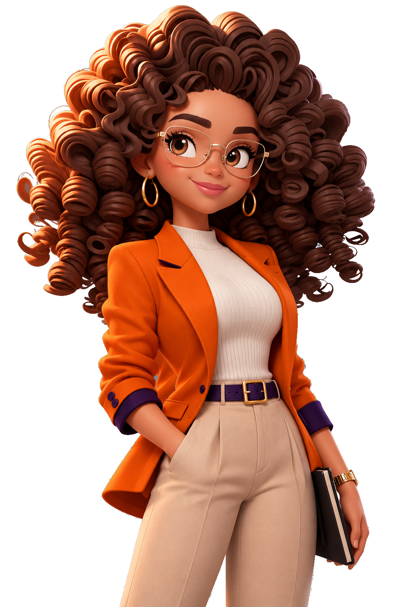

Acesso simplificado
Encontre informações institucionais sem precisar procurar em diferentes documentos e canais.
Uma nova forma de encontrar respostas sobre a vida escolar — com acolhimento, clareza e tecnologia.

A Mariana é uma assistente virtual criada para aproximar estudantes das informações da ETE Antônio Arruda de Farias.
Ingresso, matrícula, cursos e trajetória acadêmica: encontrar orientações importantes pode ser mais simples. A proposta é reunir essas informações em uma experiência acolhedora, clara e fácil de consultar.
Quero conhecer a Mariana ↗Uma demonstração ilustrativa de como uma conversa com a Mariana pode ajudar na busca por informações da escola.
Encontre informações institucionais sem precisar procurar em diferentes documentos e canais.
A assistente utiliza uma base de informações organizada para responder às dúvidas dos estudantes.
Consulte informações de maneira simples e acessível, conforme a disponibilidade do serviço.
Quando a orientação está ao alcance, cada estudante pode seguir sua jornada com mais confiança.
Facilitar a busca por informações institucionais e reduzir barreiras para encontrar orientações.
Usar a tecnologia como ferramenta de democratização do acesso ao conhecimento e aos serviços educacionais.
Dar mais independência na busca por informações sobre ingresso, matrícula e vida acadêmica.
“Quando a informação chega a todos,
novas oportunidades também chegam.✳
A Mariana é uma iniciativa do Espaço CRIA da Escola Técnica Estadual Antônio Arruda de Farias.
O projeto surgiu da proposta de utilizar inteligência artificial para tornar as informações institucionais mais acessíveis aos estudantes. Uma ideia construída dentro da escola, pensando nas necessidades de quem vive a escola.
Integrantes da equipe, fotografias e logotipos oficiais poderão ser incluídos quando disponibilizados.
Estamos construindo um jeito mais próximo de encontrar as informações da escola.
Voltar ao início ↑